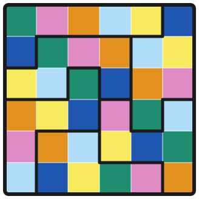

Los sudokus son tableros con símbolos (dígitos) en cada celda, donde toda fila, columna y región consisten de símbolos distintos. Esta es una colección de sudokus modificados, donde cada sudoku tiene reglas adicionales que agregan más creatividad y belleza a la lógica que los resuelve. Todos los sudokus en esta colección tienen solución única, y están pensados para ser resueltos con pasos y deducciones lógicas.
La colección está ordenada para aprender a razonar: cada sección entrena una idea de las matemáticas discretas, disfrazada de acertijos. Los acertijos están ordenados del más accesible al más retador (en principio, retroalimentación bienvenida), con la escala de las pistas de esquí: ● para todo el mundo, ■ un poco más retador, ◆ difícil y ◆◆ Casi imposible.
Es posible que los primeros problemas te resulten sencillos, tu intuición y habilidades deductivas previas seguro serán suficientes. Para resolver los problemas más avanzados, intenta tener total confianza de los pasos que des: no escribas dígitos que no estés completamente seguro que van ahí. Asegúrate de que tienes una justificación adecuada de por qué ningún dígito puede ir en esa casilla excepto el que quieres colocar. Lee bien las reglas de cada sudoku, y utiliza toda la información disponible. Usa las herramientas de nuestra plataforma, anota tus observaciones. Explora todas las posibilidades y descarta las incorrectas. Como diría Sherlock Holmes:
«Una vez descartado lo imposible, lo que queda, por improbable que parezca, debe ser la verdad.»
En las páginas de las secciones específicas habrá más ideas generales para resolver los problemas (todo). Cada acertijo trae pistas escondidas por si te atoras (en versión beta, cualquier retroalimentación es bienvenida).
Lo más importante es que disfrutes los problemas. Las ideas, como todo lo bueno en la vida, toman tiempo. Sé paciente, muy paciente. Hazte consciente de los procesos que tomas al resolver los problemas. Y de nuevo, disfruta el proceso.
Curso relámpago: ocho tableros chiquitos, cada uno te enseña una variante clásica en cinco minutos. Luego, los primeros retos de verdad.
●Intro: Sudoku killer — Michael Lefkowitz
●Intro: Puntos kropki — Michael Lefkowitz
●Intro: XV — Michael Lefkowitz
●Intro: Flechas — Michael Lefkowitz
●Intro: Anticaballo — Michael Lefkowitz
●Intro: Termómetros — Michael Lefkowitz
●Intro: Líneas renban — Michael Lefkowitz
●Intro: Círculos contadores — Michael Lefkowitz
●Friendly Void — gdc
■Partially Permanent Fog — gdc
■Termómetros y equilibrio — Marty Sears
■10X+Y — Kaktuslav
Pintar casillas y ver patrones vale más que perseguir números.
■Local Negativity — gdc
■Parity Hexagons — Tinnifer
■Silent Sweeper — gdc
◆Yin Yang Kropki — Phistomefel
◆Miracle Of Eleven — Aad van de Wetering
Mira el objeto extremo: el más grande, el más chico, la esquina.
■Peeking Snowman — gdc
■Perfect Triple — Dorlir
◆Pumpkin Patch — Marty Sears
◆Cross Product — Michael Lefkowitz
◆24 / 4 — Marty Sears
Regiones conexas: qué las mantiene unidas y dónde se cortan.
■What About That Shadowy Place? — gdc
■Onimollif — gdc
◆Sliding Doors — Michael Lefkowitz
◆Construcción caótica: flechas — Phistomefel
◆◆Forcing — Kaktuslav
Seguir, construir y acorralar caminos.
■RAT RUN 1: Primer — Marty Sears
■RAT RUN 2: Tenacity — Marty Sears
◆RAT RUN 3: Double Dutch — Marty Sears
◆RAT RUN 4: Borderline — Marty Sears
◆RAT RUN 5: Disparity — Marty Sears
◆Blue or Yellow? — Marty Sears
◆Modular Zigzag — Kaktuslav
◆◆RAT RUN 6: Equilibrium — Marty Sears
◆◆Construcción caótica: Loop Sum — Phistomefel
Conjuntos de casillas, sumas totales, intersecciones y dobles conteos.
■Area 51 — Michael Lefkowitz
■What a Narcissist — gdc
■4 / 13 — Marty Sears
◆Two Arrows and a Tenline — Marty Sears
◆Index Fingers — Marty Sears
◆Ranked Quads — Marty Sears
◆Spiraling Circles — Pulsar
◆Half Circles — Dorlir
◆Overlap — blackjackfitz
◆Dancing in a ring — Fool on Hill
Sin etiquetas: aquí nadie te dice qué idea esperar. Como en la vida.
■Party Snack — Tinnifer
■The Concatenation Game — Marty Sears
◆Minesweeper — TalkingFredish & Mickey
◆Nadir — Barrels
◆Renban ModE — Mr.Menace
◆Difference Of Squares — MathGuy_12
◆Hypnotic Suggestion — Atticus837
◆◆4 x 4 x 4 — Marty Sears
◆◆Hamiltonian Killer Thermo — Kaktuslav
◆◆The Dutch Miracle — Aad van de Wetering
◆◆El sudoku del alcaide — Elytron